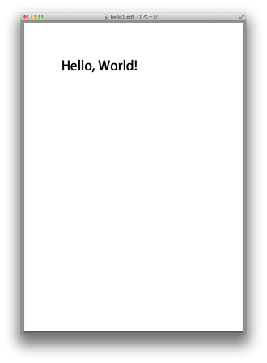

Hello World (1) ― レンダリング・パラメータ ―¶
Field Reports付属のreportsコマンドを使って，Hello World を作成します。
レンダリング・パラメータの作成¶
最初にレンダリング・パラメータを作成します。 以下の内容のテキストファイルを作り“hello1.json”というファイル名で保存します。
// hello1.json
{
"template": {"paper": "A4"},
"context": {
"hello": {
"new": "Tx",
"value": "Hello, World!",
"rect": [100, 700, 400, 750]
}
}
}
reportsコマンドに与えるレンダリング・パラメータは，JSON形式で作成します。
JSONでは，辞書要素を“{キー1: 値1, キー2: 値2, … キーn: 値n }”と表記し，リスト要素を“[ 値1, 値2, … 値n ]”と表記します。
レンダリング・パラメータのトップレベルの要素としてtemplateとcontextがあります。
template辞書は，本来はPDFテンプレート・ファイルのパス名を記述する場所ですが，今回はテンプレートを使用せずに空のページを新規に生成しますので，用紙のサイズのみをpaper属性で指定します。
context辞書では，フィールド名を「キー」にフィールド属性を「値」として辞書要素を列挙します。ここでは，“hello”がフィールド名に，“{ “new”: “Tx”, “value”: “Hello, World!”, “rect”: [100, 700, 400, 750] }”がフィールド属性にそれぞれ対応します。
PDFテンプレートを使用していないので本来フィールド名に意味はありませんが，ここでは便宜的に“hello”というフィールド名を付けています。
フィールド属性のnew要素により，新規にテキストフィールドを作成することを指示します。value属性でフィールドの値を与え，rect属性でフィールドの座標（[左, 下, 右, 上]）を与えます。
Field Reportsでは，座標系の単位はすべてポイント（pt）で統一しています。1ポイント ＝ 1/72インチ ≒ 0.3528mm ですので，A4タテの用紙であれば，210mm×297mm ≒ 595pt×842pt となります。
座標系の原点は左下なので，左下の座標が(0, 0)，右上の座標が(595, 842)となります。
reportsコマンドの実行¶
以下のコマンドを実行してPDFを作成します。
$ reports create hello1.json hello1.pdf
ここで，“create”は reports コマンドに与えるサブコマンド，“hello1.json”は先ほど作成したレンダリング・パラメータ，“hello1.pdf”は生成したPDFの保存先ファイル名です。
実行結果を以下に示します。

実行結果